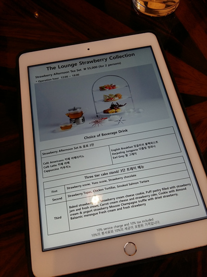
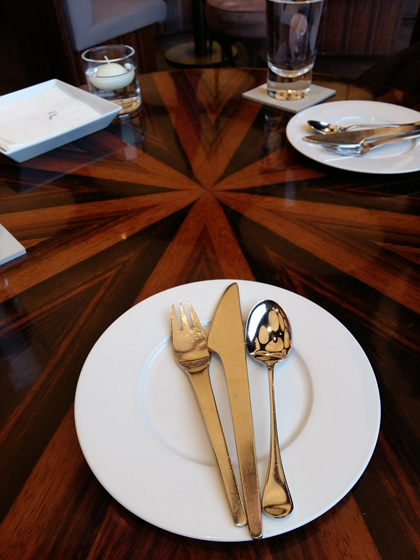
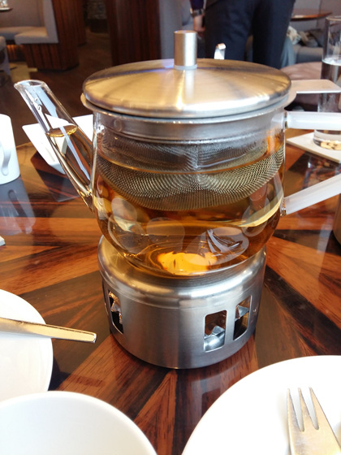
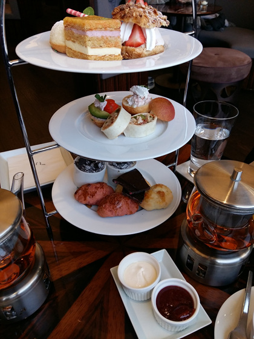
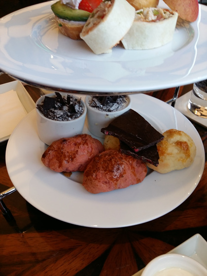
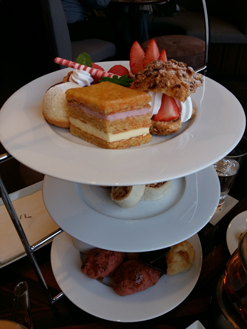
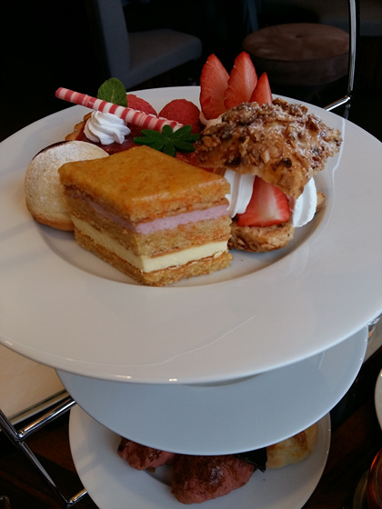

3월1일 북꼬북꼬씨와 함께 플라자호텔 애프터눈 티셋을 먹으러 갔습니다
신한 레이디베스트 카드로 할인혜택이 있는지 카드갖고있냐는 질문을 먼저 하더라구요
아니용...그런거 없습니다 :p


티는 둘다 다즐링 주문

언제봐도 행복하군용///

스콘은 좀 따닷했으면 좋았을텐데
아쉽습니다 :3

딸기딸기한 구성입니다
엄청나게 맛있는지는 모르겠지만
별로라는 생각도 안들고 전체적으로 무난했습니다
걍 조용한곳에서 예쁘고 맛난거 먹으면서 신나게 수다를 떨러간거라서요
근데 반전은 이날 광장서 태극기부대 시위가 어마무지했었다는;;
로비에도 (시위하러온듯한)사람들이 있었지만 나름 내부는 조용했는데
창밖으로 보이는 어마무지한 사람들과 시위모습과의 대비는 참으로 비현실 적이었습니다 -_-;;
다 먹고 서울역 문화284로 전시보러 이동했는데
서울역앞에 사람이 너무 많아서 들어가질 못했다능;;
(주변을 배회하다 다시한번 차를 마시고;;; 문닫기 직전 혹시나 해서 다시 가봤는데 그때 사람이 다 빠져서 들어갈수 있었습니다 ㅋㅋㅋㅋㅋ 이 뭥미 ㅋㅋㅋ)

애프터눈 티 좋아용/////
원정대를 꾸려 정기적으로 티세트 투워를 나서고 싶네요
파티원 모집합니다 :p